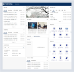
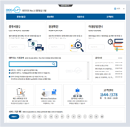

센터로 내방하여 발급할 경우
본인이 직접 내방하는 것이 원칙. 부득이하게 본인이 내방하기 어려운 경우 직계가족이 가까운 주민센터 또는 동사무소에 방문하여 대리발급 요청을 해야 함.
문의전화
아주서비스센터: 031-219-1541~4
인터넷증명서 즉시 발급 : 24시간 이용가능
이용방법
-

1. AIMS2(신규포털사이트)
- 1 로그인 후
- 2 하단에 주요서비스 증명서 발급 바로가기 (AIMS 아이디 있을 경우 별도 가입 필요 없음)
-

웹민원센터
- 1 직접 가입 후 이용 바로가기
- 2 이용대상 : 학부 재학생 및 졸업생, 각대학원 재학생 및 졸업생/교직원(재직 및 경력증명서)
무인증명서 발급기
- - 발급장소 : 아주대학교 아주서비스센터(신학생회관 116호) 앞 무인증명발급기
- - 이용시간 : 평일 09:00~21:00/공휴일 09:00~19:00
* 문이 잠겨 있을 시에, 상황실(031-219-2245) 로 연락하여, 신분확인 후 출입가능.
- - 이용방법 : 무인증명발급기 ID/PW AIMS2와 동일한 ID/PW로 변경 (2016.06.01.자)
* 카드결제 및 휴대폰 소액졀제만 가능
* 내용 관련 문의 전화번호(교무팀)
-
학적신상정보 등록 및 변경 문의
-
영문명 등록 문의
-
성적 관련 문의
- - 소요시간 : 즉시발급
- - 이용대상 : 학부 재학생, 휴학생 및 졸업생, 각 대학원 재학생, 휴학생 및 졸업생
- - 인지료 : 국문·영문 재학생 - 500원 * 발급통수 / 졸업생은 1000원 * 발급통수
행정관서 FAX 민원 신청
- - 발급장소 : 전국 동사무소, 시청, 구청의 팩스민원 창구 방문
- - 이용시간 : 월-금 09:00~17:00
- - 소요시간 : 3시간 이내
- - 이용대상 : 학부 재학생, 휴학생 및 졸업생, 각 대학원 재학생, 휴학생 및 졸업생
* 대학원 졸업자는 소속 대학원을 반드시 기재해야함.
* 성적증명서 신청 시 석차표기를 원할경우, 신청시 기타사항에 기재.
* 의학전문대학원 졸업생의 경우 석차표기는 의과대학 교학팀에 방문하여 직접 기재
- - 발급수수료 : 국, 영문 구분 없음
- - 증명서인지료 : 300원* 발급통수
- - 업무처리비용 : 1,000원 * 증명서종
증명서 종류
| 발급증명 | 발급대상 | 비고 | ||||||||
|---|---|---|---|---|---|---|---|---|---|---|
| 학부 | 대학원 | |||||||||
| 재학생 | 휴학생 | 제적생 | 졸업생 | 재학생 | 휴학생 | 수료생 | 제적생 | 졸업생 | ||
| 재학증명서(국/영) | ○ | ○ | ||||||||
| 재적증명서(국/영) | ○ | ○ | ||||||||
| 성적증명서(국/영) | ○ | ○ | ○ | ○ | ○ | ○ | ○ | ○ | ○ | 73~80학번 인터넷발급 불가 (문의 219-1542) |
| 성적증명서-학수구분(국) | ○ | ○ | ○ | ○ | 학수구분 성적증명서란, 학기별로
성적 확인을 할 수 있는 증명서와
달리, 학수 구분별로 (전공 및 교양 대학 필수 등) 과목이 구분되어 표기되는 증명서임. |
|||||
| 졸업증명서(국/영) | ||||||||||
| 장학수혜증명서(국/영) | ○ | ○ | ○ | ○ | ○ | ○ | ○ | ○ | ○ | |
| * 학적부(국문) | ○ | ○ | ○ | ○ | ○ | ○ | ○ | ○ | ○ | 미졸업예정자(마지막 학기) |
| 졸업예정확인서(국/영) | ○ | ○ | 각 대학원 교학팀 문의 | |||||||
| 졸업예정증명서(국/영) | ○ | ○ | ○ | 학위청구논문 제출 후 발급가능 | ||||||
| 휴학증명서(국/영) | ||||||||||
| 복학증명서(국/영) | ○ | ○ | 복학 후 한학기 동안 발급 | |||||||
| 휴학예정증명서(국/영) | ○ | ○ | 재학생 중 휴학신청을 한 학생에 한하여 발급가능 |
|||||||
| 복학예정증명서(국) | 휴학생 중 복학신청을 한 학생에 한하여 발급가능 |
|||||||||
| 수료증명서(국/영) | ○ | ○ | ○ | ○ | ○ | ○ | ||||
| 제적증명서(국/영) | ○ | |||||||||
| 비교과성적증명서(국) | ○ | ○ | ○ | |||||||
| 비교과(자율활동)증명서(국) | ○ | ○ | ○ | |||||||
| 공학교육인증이수증명서(국) | ○ | |||||||||
| 공학교육인증이수예정 증명서(국) |
||||||||||
교직원이 발급 받을 수 있는 증명서의 종류
| 발급증명 (국문/영문) |
발급대상 | 발급료 | 비고 | |
|---|---|---|---|---|
| 재직 | 퇴직 | |||
| 재직증명서(국/영) | ○ | |||
| 경력증명서(국/영) | ○ | ○ | ||
| * 원천징수영수증(국/영) | ○ | |||
| * 각종근로소득증명서(국/영) | ○ | |||
| * 급여확인원(국/영) | ○ | |||
| * 진료비감액확인서(국) | ○ | |||
참고 : *표시 창구에서만 가능/인터넷 발급, FAX민원, 우편, 창구발급 증명서 종류 동일
증명료 및 발급 수수료
| 발급방법 | 재학생 | 졸업생 | 비고 |
|---|---|---|---|
| 1. 창구, 교내망, 무인발급기 | 500원*발급통수 | 1,000원*발급통수 | 창구 증명료 9월부터 1,000원으로인상 |
| 2. 교외망, 인터넷즉시발급 | 500원*발급통수 + 대행수수료 (비고란 참고) | 1,000원*발급통수 + 대행수수료(비고란 참고) | * 대행수수료는 발급통수에 따라 상이함. |
| 3. 행정관서 FAX 민원신청 | 300원(대행수수료)*발급통수 | 300원(대행수수료)*발급통수 | •1통당 기본 1,000원 |
| 4. 우편 | 500원*발급통수 + 등기비 | 1,000원*발급통수 + 등기 | •같은 종류를 여러장 발급 시 통당 500원씩 추가. |
우편신청시 소봉투 대봉투 가격 상이함